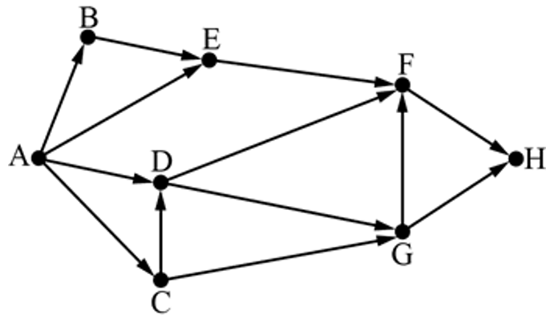
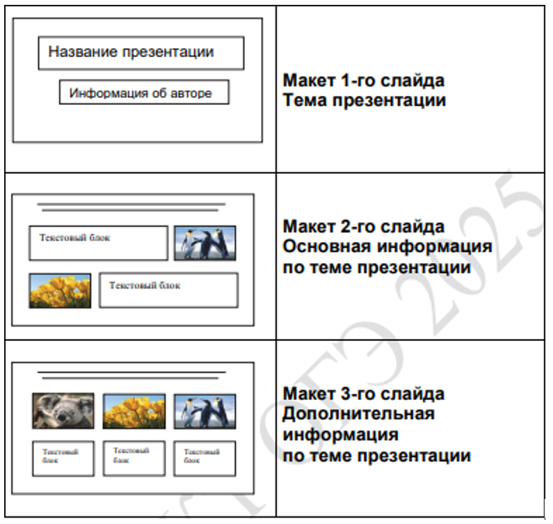
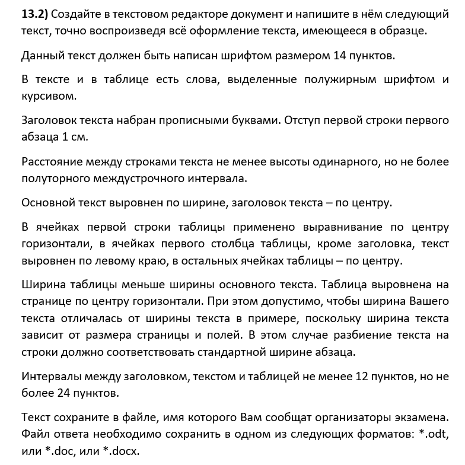
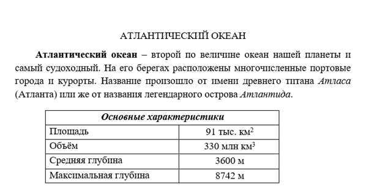
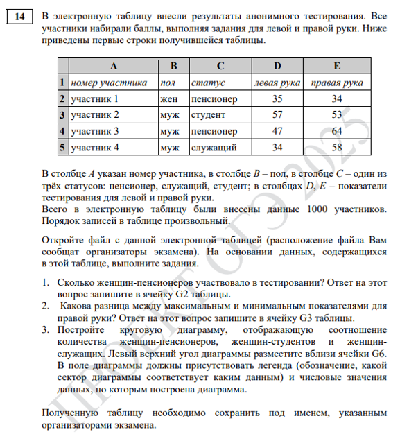
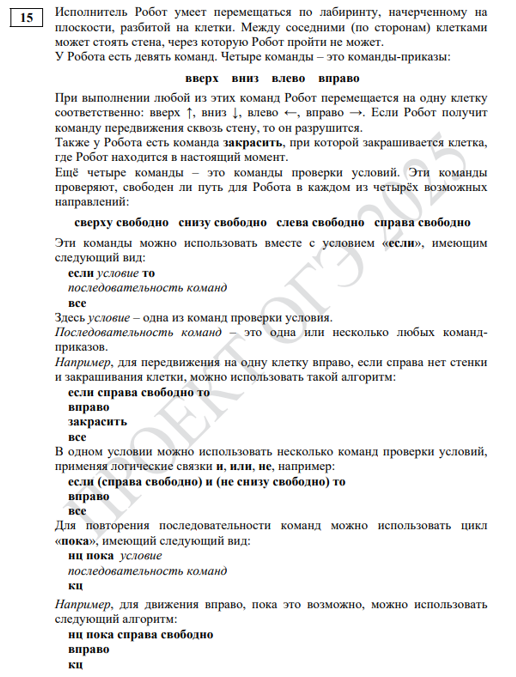
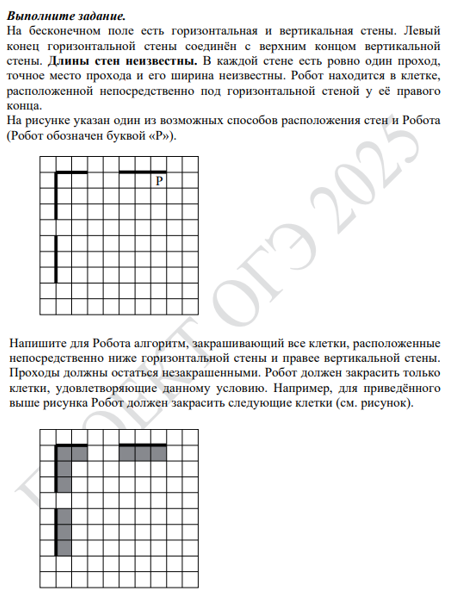
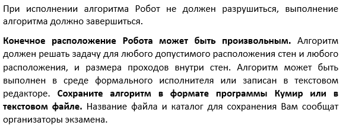
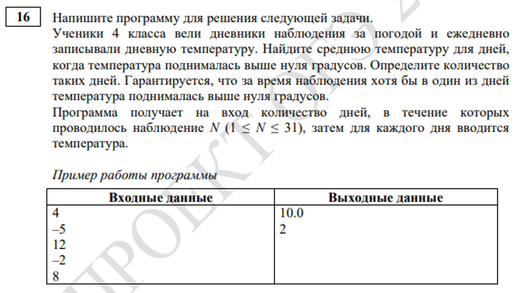

Информатика ОГЭ 2025 года содержит 16 заданий, то есть работа состоит из двух частей. Первая часть содержит 10 заданий с краткими ответами, во второй части 6 заданий, которые необходимо выполнить на компьютере.
С 1 по 12 ответы необходимо перенести на БЛАНК ОТВЕТОВ № 1.
C 13 по 16 необходимо выполнить на компьютере, результатами выполнения заданий являются отдельные файлы. Имя файла которого сохранили необходимо перенести на БЛАНК ОТВЕТОВ № 2.
| Номер задания | Максимальный балл |
| № 1-12 | 1 |
| № 13 | 2 |
| № 14 | 3 |
| № 15 | 2 |
| № 16 | 2 |
| Баллы | Оценка |
| 0-4 | 2 |
| 5-10 | 3 |
| 11-15 | 4 |
| 16-21 | 5 |
1. В кодировке КОИ-8 каждый символ кодируется 8 битами. Ученица написала текст (в нём нет лишних пробелов):
«Предметы мебели: пуф, стул, диван, кресло, кровать, тумбочка, оттоманка, полукресло, раскладушка».
Ученица удалила из списка название одного предмета, а также лишние запятую и пробел – два пробела не должны идти подряд. При этом размер написанного предложения в данной кодировке оказался на 13 байт меньше, чем размер нужного предложения. Напишите в ответе удалённое название предмета.
2. Сообщение зашифровано кодом. Используются только приведённые в таблице буквы.
| А | Б | В | Г | Д | Е |
| ..o.. | .o..o | .oo.o | .oooo | ...o. | .o.oo |
Определите, какие буквы в сообщении повторяются, и запишите их в ответе.
.o..o.o.oo.o..o..o....o..
3. Напишите количество натуральных чисел, для которых истинно высказывание:
НЕ(Число > 19) И (Число чётное)
4. Между населёнными пунктами A, B, C, D, E построены дороги, протяжённость которых (в километрах) приведена в таблице.
| A | B | C | D | E | |
| A | 2 | 6 | 8 | ||
| B | 2 | 3 | |||
| C | 6 | 3 | 5 | 2 | |
| D | 5 | 3 | |||
| E | 8 | 2 | 3 |
Определите длину кратчайшего пути между пунктами A и D. Передвигаться можно только по дорогам, протяжённость которых указана в таблице. Каждый пункт можно посетить только один раз.
5. У исполнителя Удвоитель две команды, которым присвоены номера:
1. умножь на 2
2. прибавь 3
Первая из них увеличивает число на экране в 2 раза, вторая прибавляет к числу 3. Составьте алгоритм получения из числа 4 числа 47, содержащий не более 5 команд. В ответе запишите только номера команд.
(Например, 12211 – это алгоритм:
умножь на 2
прибавь 3
прибавь 3
умножь на 2
умножь на 2
который преобразует число 1 в 32.)
Если таких алгоритмов более одного, то запишите любой из них.
6. Ниже приведена программа, записанная на пяти языках программирования.
| Бейсик | Паскаль | Алгоритмический язык |
|
DIM k, s AS INTEGER INPUT s INPUT t INPUT A IF s > A OR t > 12 THEN PRINT "YES" ELSE PRINT "NO" END IF |
var s, k: integer; begin readln(s); readln(t); readln(A); if (s > A) or (t > 12) then writeln ('YES') else writeln ('NO') end. |
алг нач цел s, k ввод s ввод t ввод A если s > A или t > 12 то вывод "YES" иначе вывод "NO" все кон |
| С++ | Python | |
| #include using namespace std; int main() { int s, k; cin >> s; cin >> k; cin >> A; if (s > A) or (t > 12): cout << "YES"; else cout << "NO"; return 0; } |
s = int(input()) k = int(input()) A = int(input()) if (s > A || t > 12): print("YES") else: print("NO") |
|
Было проведено 9 запусков программы, при которых в качестве значений переменных s и t вводились следующие пары чисел:
(13, 2); (11, 12); (–12, 12); (2, –2); (–10, –10); (6, –5); (2, 8); (9, 10); (1, 13).
Укажите наименьшее целое значение параметра А, при котором для указанных входных данных программа напечатает «NO» восемь раз.
7. Доступ к файлу hello.jpg, находящемуся на сервере home.info, осуществляется по протоколу ftp. Фрагменты адреса файла закодированы цифрами от 1 до 7. Запишите последовательность этих цифр, кодирующую адрес указанного файла в сети Интернет.
1) info
2) ://
3) home
4) /
5) hello
6) ftp
7) .jpg
8. В языке запросов поискового сервера для обозначения логической операции «ИЛИ» используется символ «|», а для логической операции «И» – символ «&».В таблице приведены запросы и количество найденных по ним страниц некоторого сегмента сети Интернет.
| Запрос | Найдено страниц (в тысячах) |
| Волга & (Ока | Кама) | 420 |
| Волга & Ока | 220 |
| Волга & Кама | 310 |
Какое количество страниц (в тысячах) будет найдено по запросу Волга & Ока & Кама?
Считается, что все запросы выполнялись практически одновременно, так что набор страниц, содержащих все искомые слова, не изменялся за время выполнения запросов.
9. На рисунке – схема дорог, связывающих города A, B, C, D, E, F, G, H. По каждой дороге можно двигаться только в одном направлении, указанном стрелкой. Сколько существует различных путей из города А в город H?

10.Вычислите значение арифметического выражения:
101111012 + 11018 + 11116
В ответе запишите десятичное число, основание системы счисления указывать не нужно.
11.
В одном из произведений А.П. Чехова, текст которого приведён в подкаталоге каталога Проза,
присутствует эпизод, в котором щенок, «взятый приучаться», услышал выстрел и поджал хвост.
С помощью поисковых средств операционной системы и текстового редактора выясните кличку этого щенка.
 Скачать файл
Скачать файл12. Сколько файлов c расширением .htm содержится в подкаталогах Есенин и Лермонтов каталога DEMO-12/Поэзия? В ответе укажите только число.
Развернутые задания
13.1) Используя информацию и иллюстративный материал, содержащийся в каталоге DEMO-13, создайте презентацию из трёх слайдов на тему «Хомяк». В презентации должны содержаться краткие иллюстрированные сведения о внешнем виде, ареале обитания, образе жизни и рационе хомяков. Все слайды должны быть выполнены в едином стиле, каждый слайд должен быть озаглавлен. Презентацию сохраните в файле, имя которого Вам сообщат организаторы экзамена. Файл ответа необходимо сохранить в одном из следующих форматов: *.odp, *.ppt, *.pptx.
Требования к оформлению работы:
1. Ровно три слайда без анимации. Параметры страницы (слайда): экран (16:9), ориентация альбомная.
2. Содержание, структура, форматирование шрифта и размещение изображений на слайдах:
первый слайд – титульный слайд с названием презентации, в подзаголовке титульного слайда в качестве информации об авторе презентации указывается идентификационный номер участника экзамена;
второй слайд – основная информация в соответствии с заданием, размещённая по образцу на рисунке макета слайда 2:
• заголовок слайда;
• два изображения;
• два блока текста;
третий слайд – дополнительная информация по теме презентации, размещённая по образцу на рисунке макета слайда 3:
• заголовок слайда;
• три изображения;
• три блока текста.
На макетах слайдов существенным является наличие всех объектов, включая заголовки, их взаимное расположение. Выравнивание объектов, ориентация изображений выполняются произвольно в соответствии с замыслом автора работы и служат наилучшему раскрытию темы.

В презентации должен использоваться единый тип шрифта.
Размер шрифта для названия презентации на титульном слайде – 40 пунктов, для подзаголовка на титульном слайде и заголовков слайдов – 24 пункта,
для подзаголовков на втором и третьем слайдах и для основного текста – 20 пунктов.
Текст не должен перекрывать основные изображения и сливаться с фоном.
 

  
